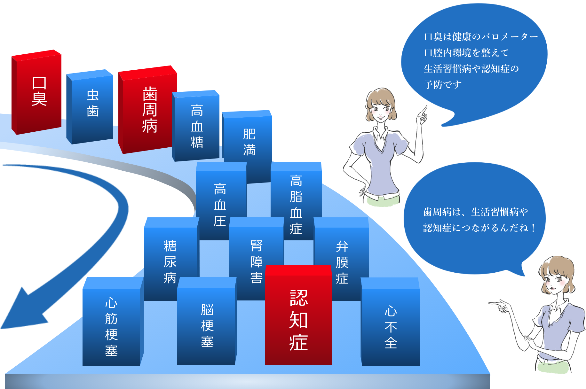

COLUMN
口臭とは？
口臭・歯周病ドミノ
こちらの図は、口腔内環境が悪くなると連鎖的に生じる病気の流れです。
例えば、認知症に関しても、国内の有名な疫学研究で歯周病との関連が証明されました。
また、認知症になりやすい人たちの研究でも、糖尿病をはじめとする生活習慣病などがリスクファクター（原因因子）となっていることがわかりました。


歯周病は、すでに20代前半から始まる病気でもあり、継続的に口の中を清潔に維持することでしか予防できません。様々な、病気の予防を考えると口の中を清潔に保つことの重要性を理解できると思います。その、歯周病のサインは口臭です。
歯周病を引き起こす菌は、口の中の残りカスを栄養にして、ガスを発生させます。
それが口臭となっています。
歯周病と全身疾患の関係


認知症と口腔内環境
認知症は、すでにみなさんがご存じの通り、患者さんにとってもご家族にとっても大変な病気です。認知症は、研究が進んだ今では長い時間かかって進行している病気であることがわかりました。早い人では、30歳代からその時計は動き出します。そして様々な生活習慣病もその速度を早めていきます。
歯周病でアルツハイマー病が
悪化するメカニズム（仮説）


歯周病菌
血流にのって脳内に侵入
- アミノロイドβの蓄積
- 免疫細胞の攻撃の増加
- 神経細胞の死滅、
神経伝達の異常

- アルツハイマー病の憎悪
- 炎症の慢性化
- 細胞・組織の変性
歯周病の原因菌や毒素、炎症性物質などが血液中に入り込み、脳に侵入する。脳の中でアミロイドβとともに炎症を悪化させ、免疫細胞の攻撃を増加させる。その結果、神経細胞が死滅するなどアルツハイマー病が増悪する。

そんななかで、一つのサインとして研究が進んでいる分野は、歯周病です。そのわかりやすいサインが口臭です。口臭は、すぐわかる健康の信号です。
口腔内の環境を整えることで、様々な病気の予防ができます。人生の時間を大切にするために、今日から始めてみませんか？